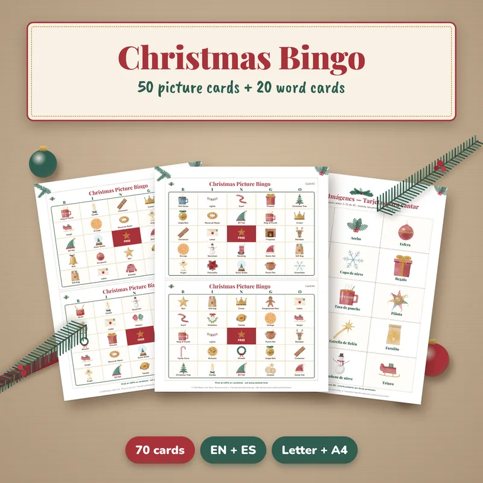
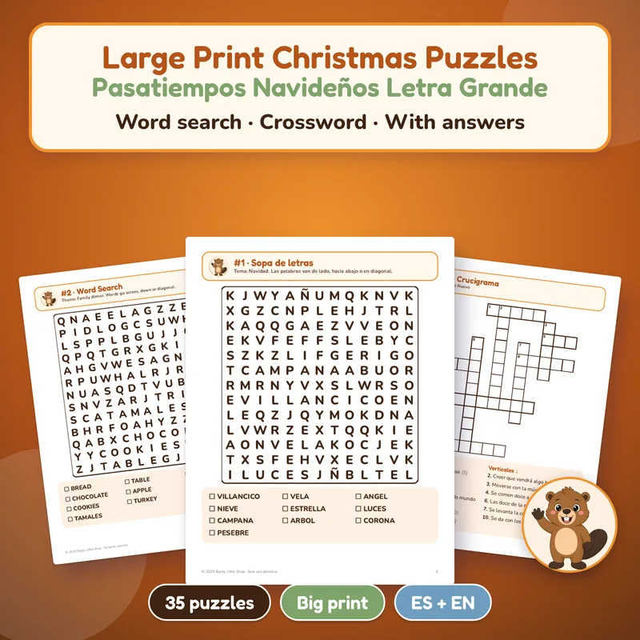

Home › Spanish Christmas printables
Spanish Christmas printables for bilingual families
Christmas games, puzzles and cards with a complete Spanish PDF and a complete English PDF: a Christmas Lotería with 54 cards and 32 tablas, 50 picture bingo cards and a free Christmas Mini Kit to start. Instant download, US Letter and A4.

Christmas Party Games
13 printable Christmas games, including Lotería Navideña with 54 watercolor cards and 32 unique tablas, plus picture bingo and trivia. EN + ES.
$9.99 USDBuy and download
Christmas Picture Bingo
50 watercolor picture bingo cards, 45 calling cards and 20 word bingo cards. English and Spanish, Letter and A4.
$5.99 USDBuy and download
Free Christmas Mini Kit
Charades, Would You Rather, Christmas Scattergories, card + 8 gift tags, coloring page and 2027 mini calendar. EN + ES.
FREEGet it freeWhy bilingual Christmas printables work
Every printable on this page comes as a complete English PDF and a complete Spanish PDF, in US Letter and A4. The pages match, so you can print the Spanish set for a game night with grandparents, the English set for cousins who don't speak Spanish, or one of each to practice new words side by side. It's an easy way to keep Spanish part of the holidays for bilingual families, heritage speakers and anyone learning the language at home.
What you can print in Spanish
- Lotería Navideña: 54 original watercolor cards and 32 unique tablas with the rules. It comes in the Christmas Party Games set ($9.99), 13 games and 70 pages per language, which also has picture bingo, charades, trivia, an Emoji Carol Quiz with 20 traditional carols and Scattergories (called Basta in Spanish).
- Christmas Picture Bingo ($5.99): 50 unique picture cards with a hand-painted picture and a label on every square, 45 picture calling cards, and 20 word bingo cards with a 40-word calling list. The labeled pictures make it a natural vocabulary game.
- Large Print Christmas Puzzles ($4.99): 20 word searches (13 × 13, 10 words each, no backward words) and 15 crosswords with simple clues, on Christmas, family dinner, winter, posadas and New Year, with all the answers.
- Christmas cards ($3.99): 12 folding cards with a warm message already written inside, plus 16 To/From gift tags. They print on one side: print, fold in four, give.
- Three Kings Day kit ($4.99): for January 6, a letter to the Three Kings with a wish list, a paper crown, 3 coloring pages, a word search, a maze and a 24-card memory game, for ages about 3 to 9.
Easy ways to use them
- Bilingual game night: the caller reads each Lotería or bingo card in Spanish, then in English, so everyone at the table can play.
- Vocabulary practice: before you play, go through the picture calling cards and say each word in both languages.
- Quiet time: hand the Spanish puzzle book to a grandparent and the English one to a teen, then compare answers.
- Cards for family abroad: print the Spanish cards for relatives who read Spanish and the English cards for everyone else.
Spanish Christmas words to know
- Navidad: Christmas · Nochebuena: Christmas Eve (Thursday, December 24, 2026)
- Las Posadas: the nine nights from December 16 to 24 · villancico: Christmas carol
- regalo: gift · estrella: star · piñata: piñata
- Día de Reyes: Three Kings Day (Wednesday, January 6, 2027) · rosca de Reyes: the Kings' cake
Planning a posada? See Las Posadas printables, or more Christmas bingo and Christmas word search pages.
¿Prefieres en español? Todos estos imprimibles traen la versión completa en español. Mira también la rosca de Reyes y la letra para pedir posada.
More bilingual printables, ready to download

Large Print Christmas Puzzles
20 Christmas word searches + 15 crosswords in large print, with answer keys. A complete English book and a complete Spanish book.
$4.99 USDBuy and download
Bucky Christmas Cards
12 folding Christmas cards with a message inside + 16 To/From gift tags, in an English file and a Spanish file.
$3.99 USDBuy and download
Bucky Three Kings Day Kit
Letter to the Kings, crown, coloring, memory game and more (14 pages).
$4.99 USDBuy and download
Spanish for Beginners Printable Pack
Not Christmas-themed: 200 picture flashcards in 10 themes, 20 worksheets with answer keys and a verb cheat sheet. Latin American Spanish.
$6.99 USDBuy and download
All Holidays Mega Pack Printable Bundle
Every party from October to December, done!
$29 USDBuy and downloadQuestions
Are these printables fully in Spanish?
Yes. Each product includes complete Spanish PDFs next to the English ones, in US Letter and A4, not just translated titles.
Is there a free Spanish Christmas printable?
Yes. The Christmas Mini Kit is free: 12 charades cards, 12 Would You Rather cards, a Scattergories sheet, a folding card with 8 To/From gift tags, a coloring page and a 2027 mini calendar, in English and Spanish.
Can I use them in my Spanish class?
Licenses differ. The Christmas Party Games, Christmas Picture Bingo, Large Print Christmas Puzzles, Christmas cards and the free Mini Kit are for personal use only, at home with your own family. The Three Kings Day kit allows personal use or one classroom, and the Spanish for Beginners pack and the Mega Pack allow personal and single-classroom use. None may be resold or shared.
When is Three Kings Day 2027?
Día de Reyes is on Wednesday, January 6, 2027. The Three Kings Day kit even includes a tracker for who found the figurine in the rosca, for Candelaria on February 2.
Which Spanish does the beginners pack teach?
Latin American Spanish. Every noun shows its article (el or la), and a bonus edition helps Spanish speakers learn English.
Is anything shipped?
No. These are digital downloads you print at home or at a print shop.
¿Prefieres en español? Mira posadas y Navidad, tarjetas navideñas gratis y ideas para intercambio de regalos.